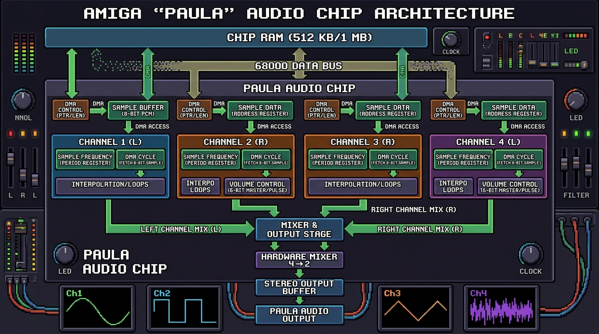

Interactive Sound in Assembly: The Real Deal
So far, we’ve made things move on screen. Now, let’s make some noise! The Amiga’s four 8-bit sound channels, collectively managed by the custom chip Paula, gave it audio capabilities that were light-years ahead of its time. In this tutorial, we’ll write an OS-friendly 68k assembly application that opens an Intuition window, renders an interactive button, and plays 8-bit PCM audio samples directly via hardware DMA.
The Amiga “Paula” Audio Hardware
The Paula custom chip features four independent 8-bit PCM sound channels (two mixed to the left audio output, two to the right). Each channel uses hardware DMA to fetch audio samples directly from Chip RAM without consuming CPU cycles.

Click diagram to expand / view full sizeSynthetic Audio vs. Custom Audio Files
When playing sound on the Amiga, you can choose between two approach types:
- Synthetic Audio Data (Self-Contained): Embed waveform bytes (square, sine, or pulse data) directly in your assembly code. This requires no external files and runs instantly in web-based environments like Amiga Playground.
- Custom Audio Files (
incbin): Convert any external audio recording (like a.wavfile) into raw 8-bit PCM data (sound.raw) and include it in your assembly source using theincbindirective.
Example 1: Self-Contained Synthetic Audio
In this example, the sound sample is embedded as a raw byte array directly in Chip RAM. This makes the code 100% self-contained so you can copy, paste, and run it anywhere without needing external files.
The Complete Code:
;-----------------------------------------------------
; asm_sound_button.asm
; Interactive Sound Button with Embedded Waveform
; - Opens an OS-friendly window on Workbench
; - Draws an interactive UI button
; - Plays embedded 8-bit PCM audio via Paula DMA
;-----------------------------------------------------
CUSTOM equ $DFF000
INTENA equ $09A
DMACON equ $096
AUD0PTH equ $0A0
AUD0LEN equ $0A4
AUD0PER equ $0A8
AUD0VOL equ $0A6
_LVOOpenLibrary equ -552
_LVOCloseLibrary equ -414
_LVOOpenWindow equ -222
_LVOCloseWindow equ -72
_LVOWait equ -468
_LVOGetMsg equ -372
_LVOReplyMsg equ -378
_LVOSetAPen equ -330
_LVOMove equ -294
_LVOText equ -342
_LVORectFill equ -318
SECTION code,CODE
start:
;--- Open Libraries ---
move.l $4.w,a6
lea IntuitionName,a1
moveq #0,d0
jsr _LVOOpenLibrary(a6)
move.l d0,IntuitionBase
beq cleanup_all
move.l $4.w,a6
lea GfxName,a1
moveq #0,d0
jsr _LVOOpenLibrary(a6)
move.l d0,GfxBase
beq fail_intuition
;--- Open Window ---
lea NewWindow,a0
move.l IntuitionBase,a6
jsr _LVOOpenWindow(a6)
move.l d0,Window
beq fail_gfx
move.l Window,a0
move.l 116(a0),a1 ; RastPort pointer
move.l a1,RastPort
;--- Draw Button ---
bsr draw_button_up
;--- Event Loop ---
event_loop:
move.l Window,a0
move.l 108(a0),d0 ; Signal mask
move.l $4.w,a6
jsr _LVOWait(a6)
move.l Window,a0
move.l 104(a0),a1 ; UserPort
move.l $4.w,a6
jsr _LVOGetMsg(a6)
move.l d0,Message
beq event_loop
move.l Message,a0
move.w 20(a0),d0 ; Message Class
cmp.w #$0200,d0 ; IDCMP_CLOSEWINDOW ($0200)
beq quit
cmp.w #$0008,d0 ; IDCMP_MOUSEBUTTONS ($0008)
bne reply_msg
move.l Message,a0
move.w 22(a0),d0 ; Code
cmp.w #$68,d0 ; SELECTDOWN
beq mouse_down
cmp.w #$69,d0 ; SELECTUP
beq mouse_up
reply_msg:
move.l Message,a1
move.l $4.w,a6
jsr _LVOReplyMsg(a6)
bra event_loop
mouse_down:
bsr draw_button_down
bsr play_sound
bra reply_msg
mouse_up:
bsr draw_button_up
bra reply_msg
quit:
move.l Message,a1
move.l $4.w,a6
jsr _LVOReplyMsg(a6)
;--- Cleanup ---
fail_window:
move.l Window,a0
move.l IntuitionBase,a6
jsr _LVOCloseWindow(a6)
fail_gfx:
move.l GfxBase,a1
move.l $4.w,a6
jsr _LVOCloseLibrary(a6)
fail_intuition:
move.l IntuitionBase,a1
move.l $4.w,a6
jsr _LVOCloseLibrary(a6)
cleanup_all:
moveq #0,d0
rts
;--- Subroutine: Draw Button Up ---
draw_button_up:
movem.l d1-d3/a1,-(sp)
move.l RastPort,a1
move.l GfxBase,a6
move.w #1,d0 ; Color pen 1
jsr _LVOSetAPen(a6)
move.w #50,d0
move.w #30,d1
move.w #270,d2
move.w #70,d3
jsr _LVORectFill(a6)
move.w #2,d0 ; Color pen 2
jsr _LVOSetAPen(a6)
move.w #110,d0
move.w #52,d1
jsr _LVOMove(a6)
lea button_text,a0
move.w #10,d0
jsr _LVOText(a6)
movem.l (sp)+,d1-d3/a1
rts
;--- Subroutine: Draw Button Down ---
draw_button_down:
movem.l d1-d3/a1,-(sp)
move.l RastPort,a1
move.l GfxBase,a6
move.w #2,d0 ; Color pen 2
jsr _LVOSetAPen(a6)
move.w #50,d0
move.w #30,d1
move.w #270,d2
move.w #70,d3
jsr _LVORectFill(a6)
move.w #1,d0 ; Color pen 1
jsr _LVOSetAPen(a6)
move.w #110,d0
move.w #52,d1
jsr _LVOMove(a6)
lea button_text,a0
move.w #10,d0
jsr _LVOText(a6)
movem.l (sp)+,d1-d3/a1
rts
;--- Subroutine: Play Sound ---
play_sound:
lea CUSTOM,a5
lea sound_data,a0
move.l a0,AUD0PTH(a5) ; Set channel 0 sample pointer
move.w #sound_len,AUD0LEN(a5) ; Set sample length in words
move.w #424,AUD0PER(a5) ; Period for ~8363 Hz playback
move.w #64,AUD0VOL(a5) ; Volume (0..64)
move.w #$8201,DMACON(a5) ; Enable Audio Channel 0 DMA (Bit 15 SET, Bit 9 DMAEN, Bit 0 AUD0EN)
rts
;--- Data Section ---
SECTION data,DATA
IntuitionName: dc.b 'intuition.library',0
GfxName: dc.b 'graphics.library',0
button_text: dc.b 'Play Sound',0
EVEN
IntuitionBase: dc.l 0
GfxBase: dc.l 0
Window: dc.l 0
RastPort: dc.l 0
Message: dc.l 0
NewWindow:
dc.w 0,0,320,100 ; Left, Top, Width, Height
dc.w 1,2 ; DetailPen, BlockPen
dc.l $0208 ; IDCMP Flags (IDCMP_CLOSEWINDOW | IDCMP_MOUSEBUTTONS)
dc.l $000F ; Flags (WFLG_DRAGBAR | WFLG_DEPTHGADGET | WFLG_CLOSEGADGET | WFLG_ACTIVATE)
dc.l 0,0 ; FirstGadget, CheckMark
dc.l window_title,0,0,0,0 ; Title, Screen, BitMap, Min/Max size
dc.w 1 ; Type (WBENCHSCREEN)
window_title: dc.b 'Amiga Audio Player',0
EVEN
;--- Audio Sample Data in Chip RAM ---
SECTION sound_chip,DATA_C
sound_data:
; Synthetic 8-bit PCM square wave burst
dc.b 127,127,127,127,127,127,127,127,-128,-128,-128,-128,-128,-128,-128,-128
dc.b 127,127,127,127,127,127,127,127,-128,-128,-128,-128,-128,-128,-128,-128
dc.b 100,100,100,100,100,100,100,100,-100,-100,-100,-100,-100,-100,-100,-100
dc.b 80, 80, 80, 80, 80, 80, 80, 80, -80, -80, -80, -80, -80, -80, -80, -80
dc.b 60, 60, 60, 60, 60, 60, 60, 60, -60, -60, -60, -60, -60, -60, -60, -60
dc.b 40, 40, 40, 40, 40, 40, 40, 40, -40, -40, -40, -40, -40, -40, -40, -40
dc.b 20, 20, 20, 20, 20, 20, 20, 20, -20, -20, -20, -20, -20, -20, -20, -20
dc.b 0, 0, 0, 0, 0, 0, 0, 0, 0, 0, 0, 0, 0, 0, 0, 0
sound_end:
sound_len equ (sound_end-sound_data)/2
Example 2: Using Custom Audio Files (incbin)
To use your own recorded sound effect or music sample in assembly:
Step 1: Exporting Raw PCM in Audacity
- Open your audio sample (
.wavor.mp3) in Audacity. - Change the Project Rate (bottom left) to 8363 Hz (standard Amiga C-3 pitch) or 11025 Hz.
- Click
File > Export > Export Audio. - Choose Other uncompressed files as format.
- Set Header to RAW (header-less) and Encoding to Signed 8-bit PCM.
- Save the file as
sound.rawin your assembly source directory.
Step 2: Binary Inclusion with incbin
In your assembly source code, replace the synthetic dc.b array in the Chip RAM section with the incbin directive:
;-----------------------------------------------------
; Custom Audio File Inclusion Example
;-----------------------------------------------------
SECTION sound_chip,DATA_C
sound_data:
incbin "sound.raw" ; Include external 8-bit raw PCM file
sound_end:
sound_len equ (sound_end-sound_data)/2 ; Length in words
When compiled with vasm, the assembler inserts the contents of sound.raw directly into the executable binary in Chip RAM.
How to Run in Amiga Playground
- Copy the Code: Click the Copy button on Example 1 above.
- Open Amiga Playground: Launch Amiga Playground on your Mac and create or open a 68k Assembly document.
- Paste & Run: Paste the code into the source editor and press Cmd + R (or click Build & Run).
- See the Result: Amiga Playground assembles the self-contained code with
vasmand runs it. Click the button to trigger audio playback!
How to Compile and Run with vasm
- Save the Code: Save Example 1 or Example 2 (with
sound.rawin the same directory) asasm_sound_button.asm. - Assemble: Open Terminal, navigate to your source folder, and run:
vasmm68k_mot -Fhunk -o asm_sound_button asm_sound_button.asm - Set up Emulator: Mount the folder containing
asm_sound_buttonas a hard drive (e.g.DH0:/Work) in FS-UAE or vAmiga. - Run in Emulator: Boot Workbench, open Shell/CLI, type
Work:asm_sound_button, and press Enter.